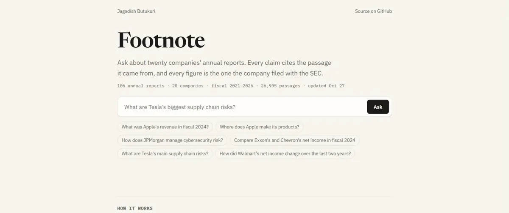

Footnote AI engineering Live · refreshed every morning
Ask about twenty public companies' annual reports and get an answer where every claim cites its passage and every figure is the number filed with the SEC.
- AWS Lambda
- S3
- Terraform
- Pinecone
- LangGraph
- LangSmith
- Claude
- bge-small on ONNX
106 reports · 27k passages
20 companies, refreshed every morning
100% exact figures
every number is the one filed with the SEC
87% → 100% grounded
after the first eval run

Situation
Financial questions are a common use for LLMs, but models invent numbers and misread tables, and a single 10-K runs hundreds of pages, so answers are hard to trust or check.
Task
Build a production-style RAG system over SEC filings where every claim carries a citation, every number is the officially filed figure, and answer quality is measured automatically.
Action
- A daily serverless pipeline on AWS pulls 10-Ks from SEC EDGAR into S3 and splits them into sections, all provisioned with Terraform.
- Sections are cut into overlapping passages and embedded on CPU with bge-small, avoiding about 10 million tokens of hosted embeddings, then indexed in Pinecone with their source.
- A LangGraph pipeline: Claude plans the question, text search and an exact-figure lookup from XBRL run in parallel, then Claude writes an answer that may cite only what was retrieved.
- A 29-question evaluation suite in LangSmith with a stronger model as judge, run as a CI gate that blocks any change that lowers answer quality.
- Found and fixed a real data problem: Exxon's ticker moved to a new holding company in 2026 and its filings silently vanished. Ingest now follows predecessor registrants and flags any company that comes back empty.
Result
- 106 annual reports, 20 companies, about 27,000 passages, refreshed every morning.
- 100% of figure questions answered with the exact filed number, such as Apple's fiscal 2024 revenue of $391,035 million.
- Grounding went from 87% to 100% after the first eval run caught cut-off answers and an invented quote.
- Runs inside the AWS free tier with a $1 a month budget alarm, at about $0.002 a question.